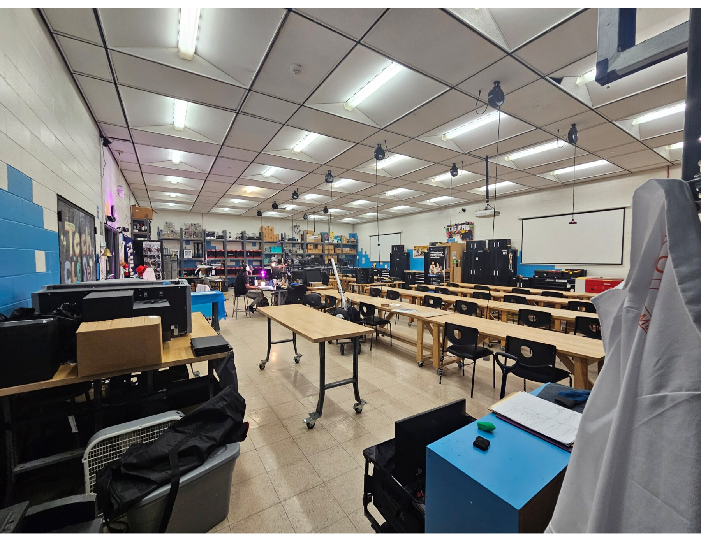
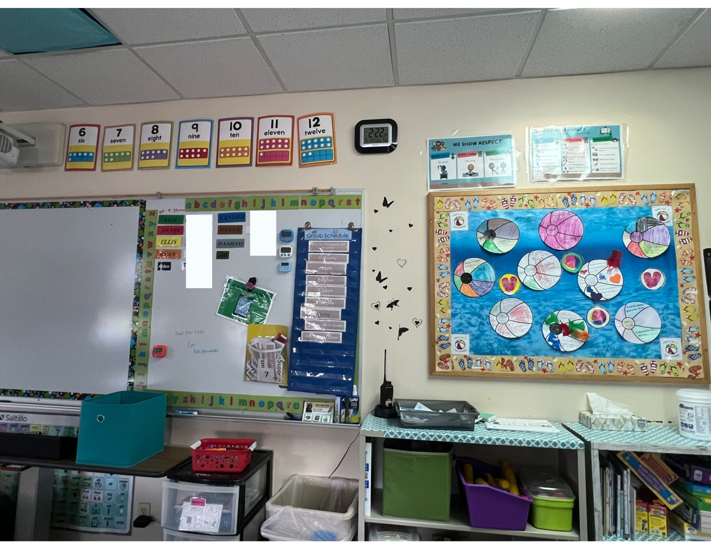

Predictability should be designed into the environment.
Visual schedules, labeled zones, stable workflows, and clear circulation can reduce ambiguity and cognitive load.
First author · Lead researcher · CHI 2026 · 🏅 Honorable Mention Award
A multidisciplinary study of how space, sensory conditions, teaching practices, assistive technologies, and community culture can support youth with autism in makerspaces.
Publication ↗
Challenge
Makerspaces can reproduce barriers through sensory overload, unpredictable routines, inaccessible communication, and limited educator preparation. The project gathered local expertise before implementing new spaces and programs.
Study focus
How should physical space, sensory conditions, technology, and facilitation work together?
What would make future makerspaces usable, welcoming, and sustainable for youth with autism?
Research approach
A staged qualitative process helped compare operational knowledge, spatial expertise, and disability-centered perspectives before turning themes into design considerations.


Key insights
Visual schedules, labeled zones, stable workflows, and clear circulation can reduce ambiguity and cognitive load.
Multimodal instruction, assistive technology, structured pacing, and sensory-regulation options support varied communication and learning needs.
Families, educators, designers, and community members must continually shape programs so spaces remain relevant and welcoming.
Outcome
The findings translate multidisciplinary perspectives into guidance for educators, architects, program designers, and policymakers.